Out of my role as a Lead Technical Trainer at Microsoft, the portfolio of trainings I’m covering has heavily shifted to Azure AI and Copilot over the last few months. Still doing Azure Architecture and Developing courses as well, but not as frequent anymore. This confirms the interest we see at customers in adopting Generative AI solutions. Apart from Copilot in M365, or using Azure AI Foundry, I also started digging into Copilot Studio a lot more. Having a good background in Azure LogicApps and a bit of PowerPlatform, Copilot Studio feels quite comfortable to me.
I’ve been working on a few Agent scenarios in Copilot Studio, which I will blog more about in the near future. One of the newer features that got my attention, is the advanced feature of HTTP Requests, which opens the door to using REST API calls to other platforms, for example Azure.
As you probably know, any action against Azure requires authentication, whether an interactive admin user logon, or a Service Principal application logon. Which means that - before I can trigger any actions against Azure, I first need to get the Copilot Studio Agent authenticating to Azure, using a JWT Bearer token (Azure Entra ID OAuth 2.0 Token).
This article walks you through the different steps and setup of the Copilot Studio Agent, to allow it to authenticate to Azure, and from there taking a possible next step against the platform.
What this article covers
✅ How to create App Registration for Copilot Studio Agent in Entra ID ✅ How to generate JWT Bearer token in Copilot Studio for API authentication ✅ How to set up Microsoft Graph API authentication with Azure Entra ID OAuth 2.0 token
Create Entra ID App Registration for Copilot Studio Agent
Any Service / Application level interaction with Azure, starts from an App Registration. This generates a Service Principal, think of it as a Service Account, which then gets linked/reused by a 3rd party application, as like in our case, Copilot Studio.
Apart from creating the Service Principal entity object, it also needs corresponding API permissions to interact with Microsoft Graph.
These are the steps to set all this up:
- From Entra ID, navigate to App Registration, and select New Registration
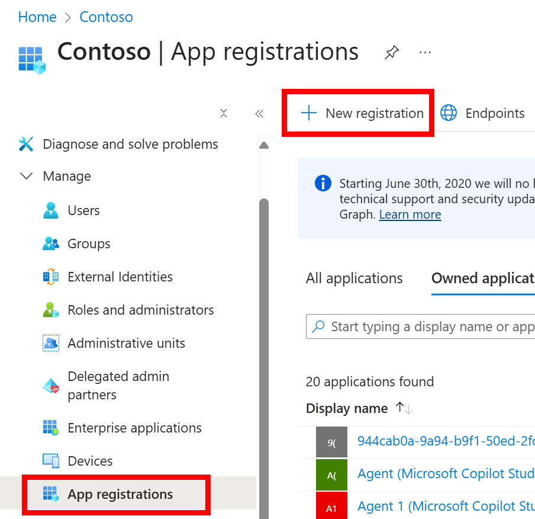
- Provide a name for the App Registration e.g. Copilot Studio Agent Demo, and leave all other default settings as-is. Click Register
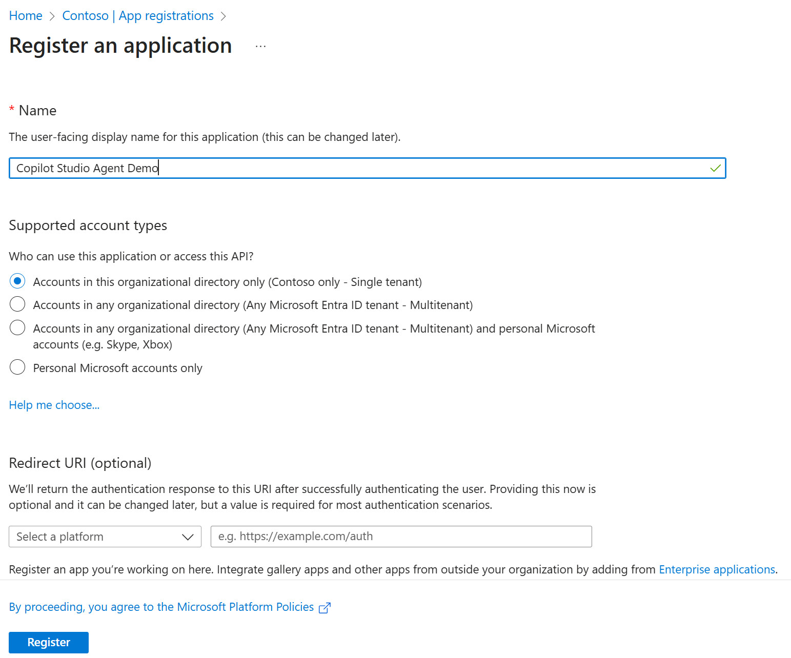
- This generates the Service Principal, with some specific IDs you need to copy aside. The Client ID, reflecting the unique GUID of the Service Principal as well as the Tenant ID which corresponds to your Entra ID Tenant GUID.
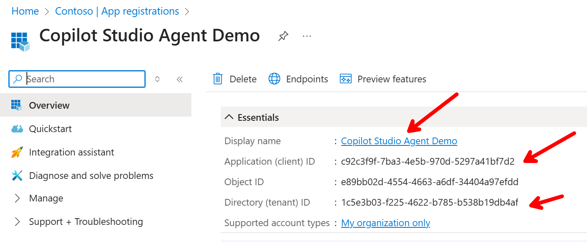
- Next, the Service Principal also needs the necessary credential to authenticate, which can be set up from the Subscription or Resource Group Access Control IAM (RBAC) permissions. For my example, I specify “Read” permissions on Subscription level, as I only want to run that as a validation of my workflow actually running successfully. You could alter to any permissions your scenario requires.
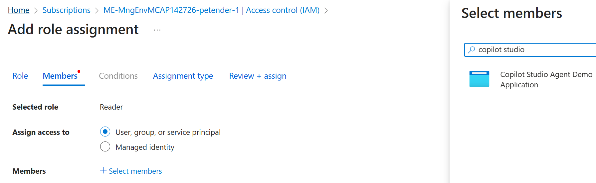
- And to request an authentication JWT Token, we also need to pass the Client ID password, which can be generated from the Entra ID App Registration page for the newly created App Registration. Copy this secret aside, as you will need it in a later step.
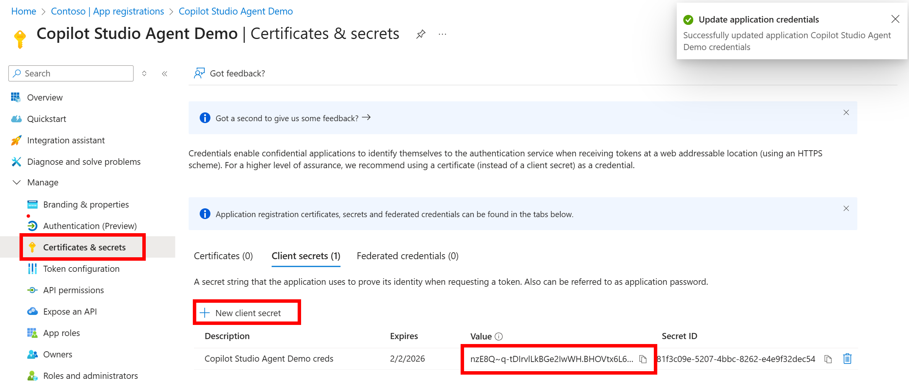
- With all this out of the way, we have all ID information, credentials and RBAC permissions to bring into Copilot Studio. But there are a few other pieces of information we are gathering first, the Authentication API Endpoint, which is the Microsoft Login URL for our Tenant. this should look like this:
|
|
and we also need a REST API Header and Body, which are the additional parameters Copilot Studio Agent REST API action requires:
|
|
where you insert the actual value of the clientid and clientsecret you copied earlier for the placeholders.
Configure the HTTP Request Action in Copilot Studio
-
Navigate to Copilot Studio and open the workflow setup of your Agent.
-
Navigate to Topics and Add a new topic. Select “From Blank”
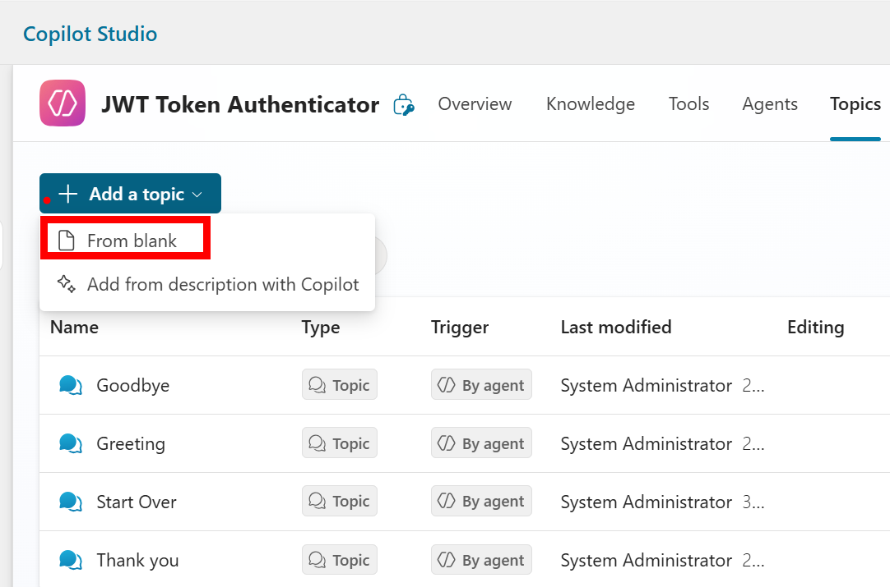
- Click the + Sign below the Trigger step, and select Advanced / HTTP Request from the option menu.
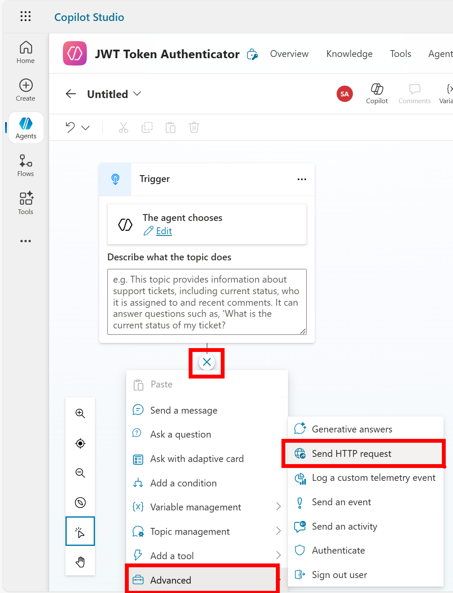
- Complete the following fields of the HTTP Request per below overview:
- URL: the login-URL specified earlier: https://login.microsoftonline.com/
/oauth2/v.2.0/token, where the placeholder gets replaced with the actual GUID of your tenant, something like this (redacted)
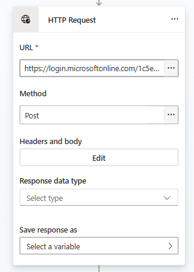
https://login.microsoftonline.com/1c5e3b03-f225-4622-b785-abcdefghi/oauth2/token
-
Method: POST
-
Headers and Body:
- Headers / Key: Content-Type
- Headers / Value: application/x-www-form-urlencoded
- Body: Raw Content
- Content Type: application/x-www-form-urlencoded
- Content: client-id=c92c3f9f-7ba3-4e5b-1234-abcdefghi&client_secret=nzE8Q~q-tDIrvlLkBGe2IwWH.abcdefghij_&grant_type=client_credentials&scope=https://graph.microsoft.com/.default
- Response headers: Create new Global variable to store the value in, e.g. HTTPResponseVar
- Response data type: Record + select Edit Schema, and add the following schema structure:
1 2 3 4 5kind: Record properties: access_token: String expires_in: Number token_type: String - Save Response as: select the Global.HTTPResponseVar again
- Save the changes.
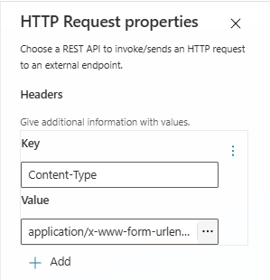
Request Header details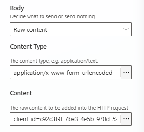
Request Body details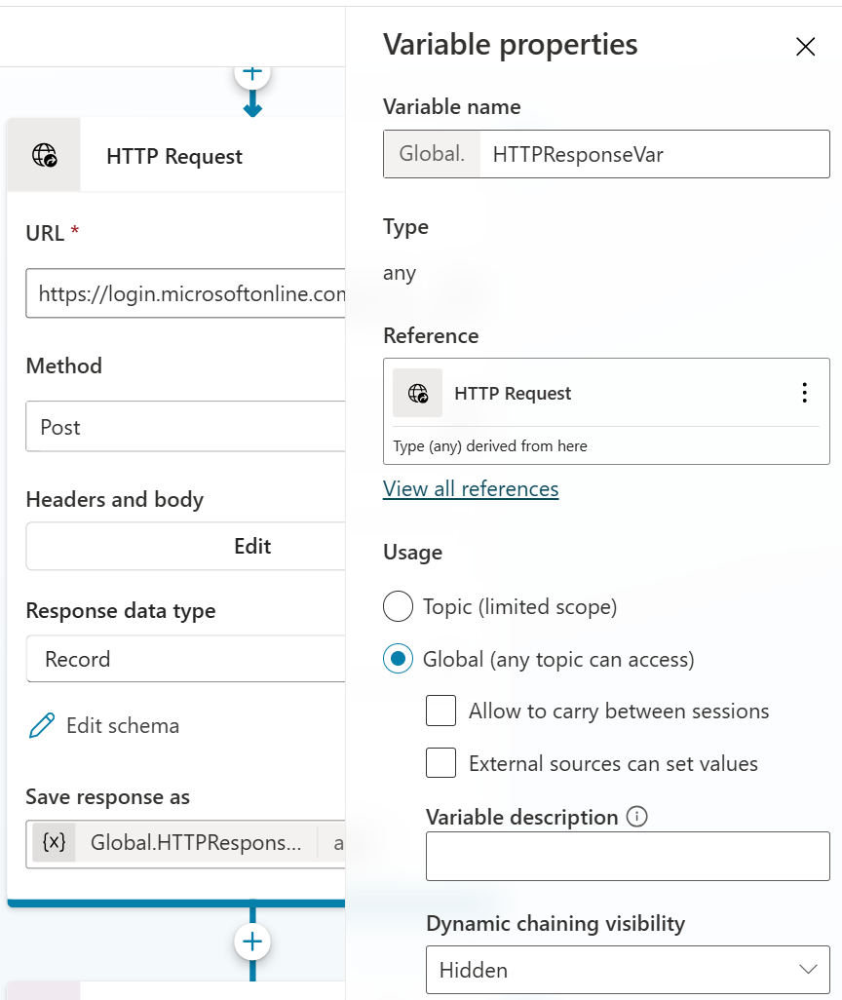
Global Variable details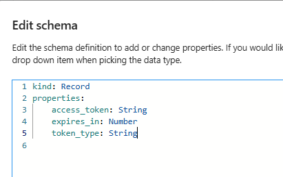
Record Schema details-
While this flow should work fine now, you won’t get any output from it. We need to update the flow with a follow-up message, in which we read/present the output from the HTTPResponseVar variable. Click the + sign below the HTTP Request step in the workflow, and select Send a Message from the context menu.
-
Enter an informative text, e.g. “Here is the Azure Token String”, and add the HTTPResponseVar variable into the text box, by selecting the insert variable {X} option and selecting the variable from the list.
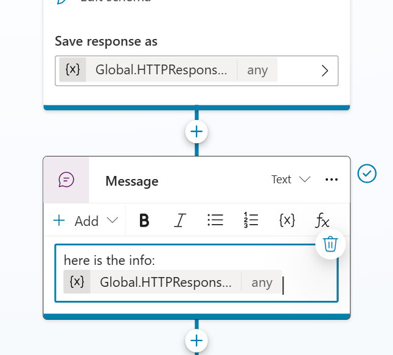
- Save the changes. Next, from the Test your Agent pane, trigger the Agent flow by sending a short chat message, like “get my token”. This should result in the chat response, showing your message “Here is the Azure Token String”, and the actual JWT token with all necessary information in it.
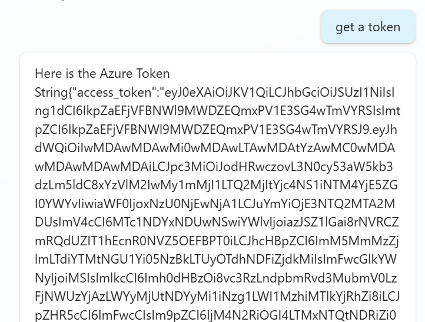
-
Cool, this works as expected! While we’re close, we’re not 100% done yet, as the value of this variable is not immediately reusable as an authentication token, as not all information in the response is part of the actually authentication token (e.g. String{“access_token”}, “expires_in”, “token_type”). We can fix this by running a concatenate formula, and splitting the received information in a new variable which only stores the actual Token information we need to authenticate. After the last message step in the flow, click the + sign again, and once more, select Send a Message. Provide a new informative message, something like “And this is the cleaned up version of the Bearer token, just what you need…”, and add a new PowerFx Expression by clicking the {fX} button. Enter the following formula:
1Concatenate(Topic.HTTPResponseVar.token_type," ",Topic.HTTPResponseVar.access_token)
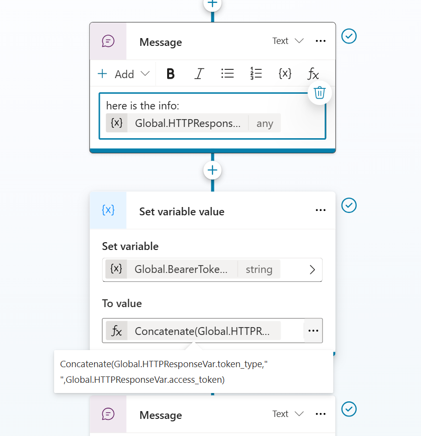
- Which would transform the response into a valid Bearer token text string “Bearer ey…” which you can use for any Azure HTTP REST API in a different Topic. To do that, it’s best to save the concat result in a new Global Variable.
Reuse the JWT Authenticator Topic in Copilot Studio Agent
While I want to keep this article on the actual JWT Token authentication process, I wanted to add a little teaser for a follow-up article, in which I create a Copilot Studio Agent to interact with Azure, relying on the Bearer Token from this Topic we just created. In any Copilot Studio flow you have, you can now refer to the Auth2Azure Authentication request Topic like this:
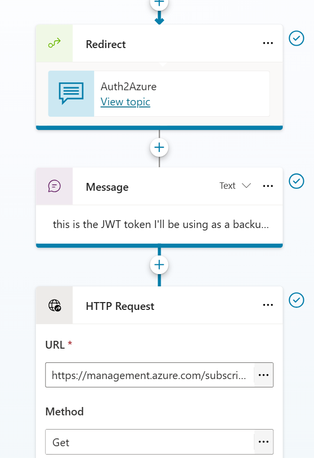
Summary
In this article, I wanted to document the necessary steps on how to use the Copilot Studio Agent - HTTP Request task, to get a Bearer Token to authenticate to Azure (or any similar HTTP REST API for that matter).

Cheers!!
/Peter